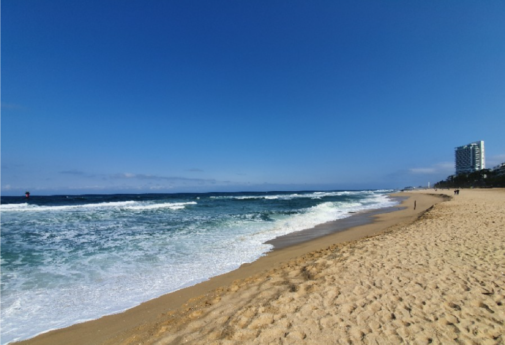
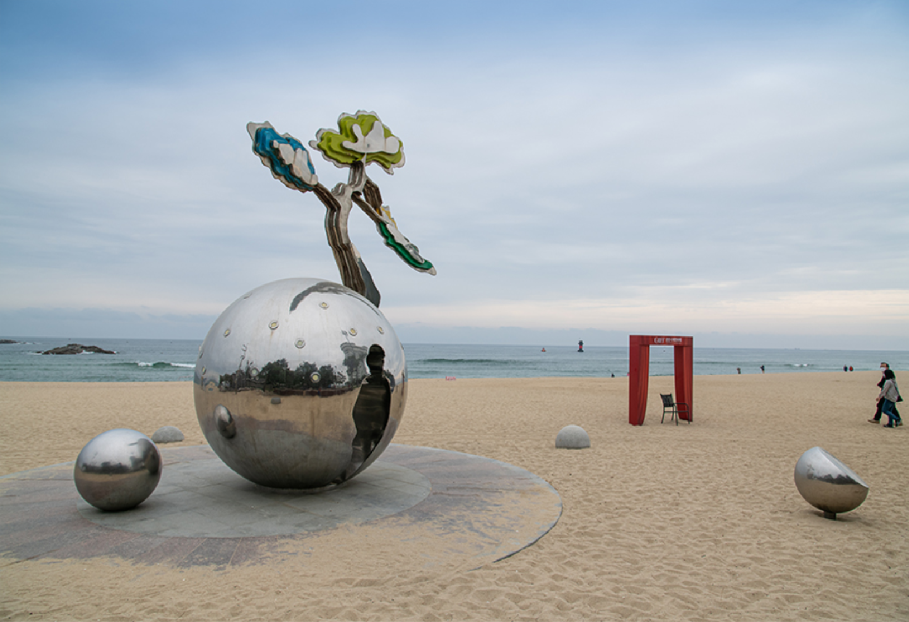
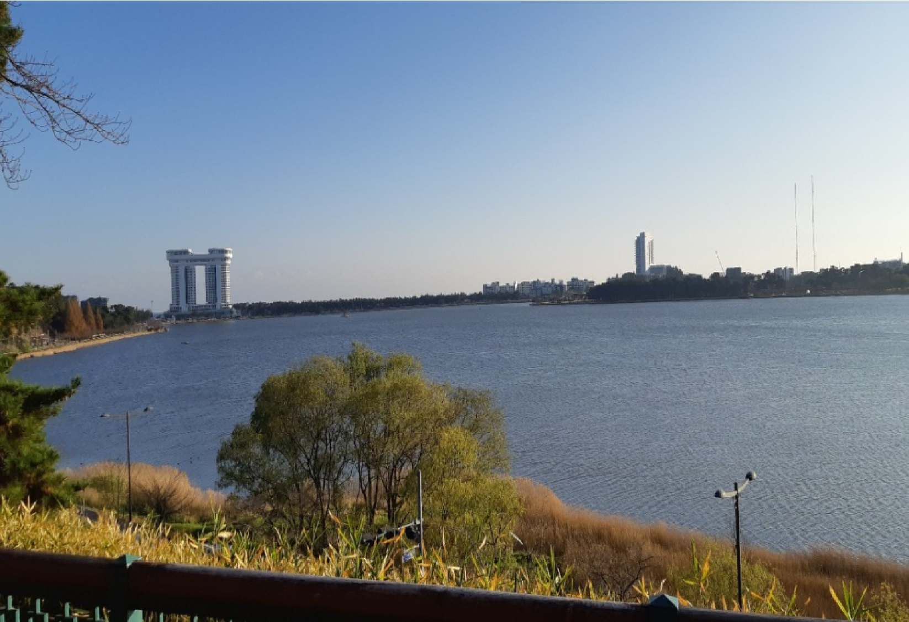

경포대
- 강릉 경포대
- "저녁 햇빛이 비껴드는 현산의 철쭉을 잇달아 신선이 타는 수레를 타고 경포를 내려가니"
우리에게 가사문학의 대가로 알려진 관동별곡에서 정철은 조선중기의 경포를 이렇게 기술했다.
또한 최근 유명 예능인 “런닝맨”에서 국민MC 유재석이 “너무 좋아 경포대”를 말하며 더욱 유명해진 곳이다.
관동팔경 경포대, 다섯 개의 달이뜨는 경포대, 봄에는 벚꽃으로, 여름에는 피서로, 가을에는 연꽃으로, 겨울에는 눈덮인 해송을 볼 수 있다.

경포대
- 강릉 경포대
- 여름은 이글이글 타는 더위 속에 추억과 낭만(浪漫)을 즐길 수 있는 바다.
가을은 쓸쓸히 혼자 거닐고 싶은 바다.겨울은 어디서 누군가가 찾아 올 것만 같은 바다는 계절마다 그 모습을 바꿔가며 관광객들에게 여유와 감동을 선사한다.
강릉바다의 푸른 물이 맹하(猛夏)의 태양 빛에 반짝이는 은광(銀光)의 모래위로 밀려오고 붉게 타오르는 해돋이와 해 저무는 저녁 노을은 우리를 다시 한번 뒤돌아보게 한다.
여름개장 중에는 해마다 여름해변축제와 관노가면극, 강릉농악, 사물놀이, 학산오독떼기 등의 전통문예행사, 해변무용제, 홍길동전, 공개방송 등 문화행사가 다채롭게 펼쳐저 피서지의 열기를 달군다.

경포대
- 강릉 경포대
- 바다를 가로지르는 유람선, 혼자만의 추억을 간직하게 되는 마차여행, 여름밤의 별을 헤아리며 젊음을 발산 할 수 있는 야영장, 싱싱한 생선회, 깨끗한 숙박시설, 편리한 대중교통 등이 경포해변 매력중의 매력일 것이다.
강릉해변 입구까지는 자동차로 갈 수 있다. 내려서 해변을 따라 경포대의 정취를 느껴보고, 송림병풍을 따라 드라이브나 산책을 하며 커피한잔의 여유도 갖고, 경포를 천천히 둘러보자.
느껴보지 못했던 진한 여유로움을 가질 수 있다. 특히, 커피의 고장이라 불리는 강릉에서의 커피는 여행의 즐거움을 배로 만들어 줄 것이다.
